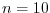
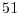
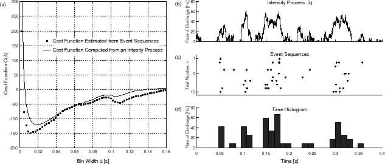

Next: 方法
Up: スパイク時系列のヒストグラム作成における最適区間幅決定のレシピ
Previous: Contents
Contents
Index
電気神経生理学の動物実験では感覚刺激・行動・注意等と神経細胞の発火頻度（レート）の相関関係がよく調べられる.
広く使われているレート推定の手法に,
同一刺激下で行われた複数回の試行のスパイク時系列を適当な時間幅をもつ区間に分割し, その中でのイベント生成率（発火率）を棒グラフとして表す
Peristimulus Time Histogram (PSTH)がある.
PSTHの形状は分割する区間の時間幅に依存するにもかかわらず, 区間幅は多くの場合研究者により恣意的に与えられている. 小山・篠本はヒストグラムによる時間依存Poisson過程のレート推定において最適な区間幅の理論値を導出し, 最適区間幅が発散する場合があることを示した[2].
従って実験データから最適区間幅を導出する手順や有限区間幅を得るのに必要な最小試行数の推定方法などが求められる.
あまり知られていないがRudemoは確率分布推定の枠組みで最適な区間幅を求める式を示している[1]. ここではこの先行研究と異なるコスト関数を導入し, スパイク統計から最適区間幅を決定する簡便な公式を導出する. またレートが一般の定常確率過程の場合の最適区間幅の理論値のスケーリング則を導出し, 転移点近傍での振る舞いを調べた. この理論の応用としてコスト関数を外挿することで, データからヒストグラム作成に必要な最小試行数を求める手法, および背後のレート過程がなめらかな過程か否かを推定する手法を提案する.
Figure 1:
スパイク時系列からの最適ヒストグラムの作成.
(a) 黒丸: 式6 を用いてスパイク時系列から推定したコスト関数(各時間幅内での移動平均をとった). 実線: 背後のレートを用いて式7の右辺 から計算したコスト関数.
(b) 時間依存Poisson過程に使用したレート(強度過程).
(c) スパイク時系列(時間依存Poisson過程, 試行数, 総スパイク数個).
(d) スパイク時系列から推定された最適幅からなる時間ヒストグラム.
|

|
Next: 方法
Up: スパイク時系列のヒストグラム作成における最適区間幅決定のレシピ
Previous: Contents
Contents
Index
hideaki
2006-07-11